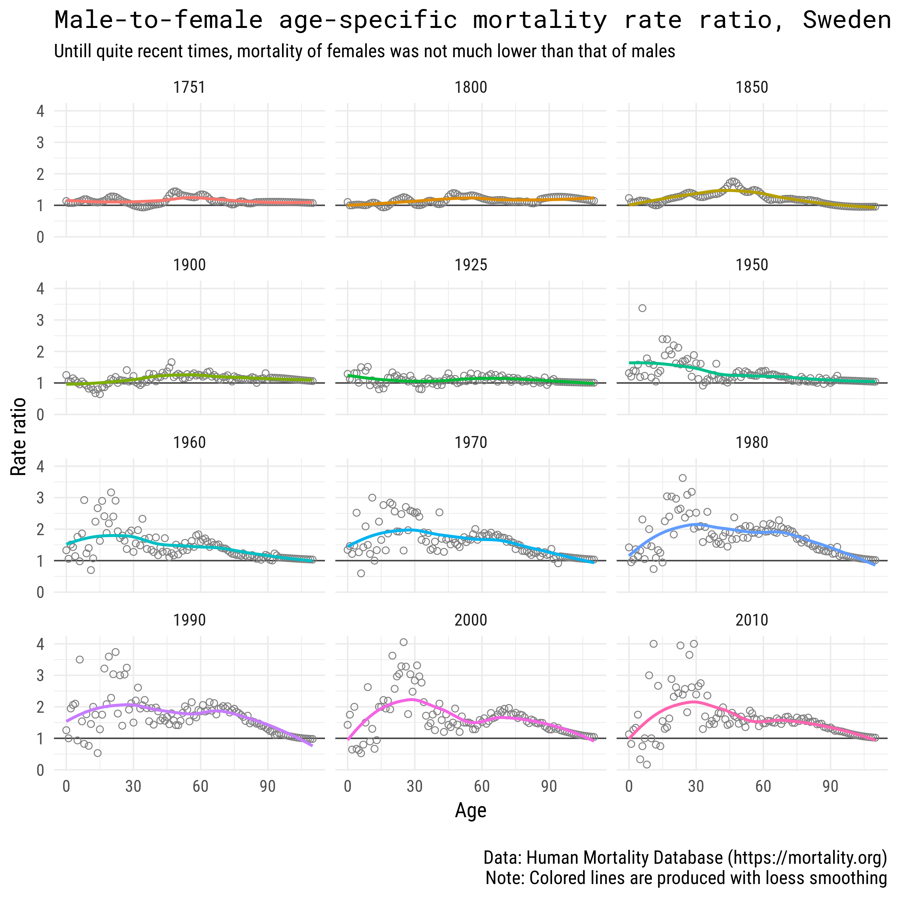

![]()
library(tidyverse)
library(viridis)
library(extrafont)
# download data
df_swe <- read_csv("http://www.rostock-retreat.org/files/application2017/SWE.csv")
# copy at https://ikashnitsky.github.io/doc/misc/application-rostock-retreat/SWE.csv
years <- c(1751, 1800, 1850, 1900, 1925, 1950, 1960, 1970, 1980, 1990, 2000, 2010)
# select years and calculate male-to-female arte-ratio of mortality
df_selected <- df_swe %>% select(Year, Sex, Age, mx) %>%
filter(Year %in% years) %>%
spread(Sex, mx) %>%
transmute(year = Year, age = Age, value = m / f)Swedish context
Sweden, with its high quality statistical record since 1748, is the natural choice for any demographic study that aims to cover population dynamics during a long period of time.
Data
The data used for this visualization comes from Human Mortality Database. It can be easily accessed from an R session using HMDHFDplus package by Tim Riffe (for examples see my previous posts - one and two). For this exercise, I will use the dataset for Sweden that was provided for an application task for Rostock Retreat Visualization1.
1 By using this data, I agree to the user agreement
Visualization
ggplot(df_selected)+
geom_hline(yintercept = 1, color = 'grey25', size = .5)+
geom_point(aes(age, value), size = 2, pch=1, color = 'grey50')+
stat_smooth(aes(age, value, group = 1, color = factor(year)), se = F)+
facet_wrap(~year, ncol = 3)+
labs(title = "Male-to-female age-specific mortality rate ratio, Sweden",
subtitle = "Untill quite recent times, mortality of females was not much lower than that of males",
caption = "\nData: Human Mortality Database (https://mortality.org)
Note: Colored lines are produced with loess smoothing",
x = "Age", y = "Rate ratio")+
theme_minimal(base_size = 15, base_family = "Roboto Condensed") +
theme(legend.position = 'none',
plot.title = element_text(family = "Roboto Mono"))
Comment
Today it is common knowledge that male mortality is always higher than female. There are more males being born, then eventually the sex ratio levels due to higher male mortality (see my previous post). Though, male mortality was not always much higher. Back in the days, when infant mortality was much higher and women used to have much higher fertility, there was almost no gender gap in age-specific mortality levels. Constant pregnancy and frequent childbirths had a strong negative impact on female health and survival statistics. We can see that only in the second half of the 20-th century gender gap in mortality became substantial in Sweden.